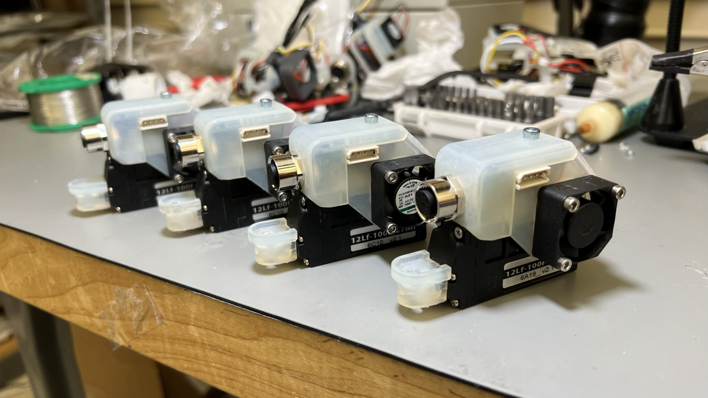

Research Experience
Robotics and Mechanisms Laboratory (RoMeLa) Summer 2021 ~ Present
- Spine Enhanced Climbing Autonomous Legged Exploration Robot (SCALER)
- Y. Tanaka et al., "SCALER: A tough versatile quadruped free-climber robot," in Proc. IEEE/RSJ Intl. Conf. on Intelligent Robots and Systems, IROS, (Kyoto, Japan), Oct. 2022
- Improved hardware reliability by remaking wires and redoing the leg wire management
- Modified the purchased linear actuators by attaching cooling fans to prevent overheating damage
- Integrated an STM32 onboard the grippers to make them controllable via serial connection and redid the wiring so that the gripper is a standalone module connected by a single power line and 12 pin communication line
- Streamlined the second design by designing a custom PCB board that mounts the 8 pin circular connector which passes both the power and signal wires to the gripper using a single cable. Integrated dynamixel connectors used by the wrist and the voltage regulator needed to power the linear actuator. Also brought back the double fan design from the initial version to improve cooling during operation
- Y. Shirai et al., "Simultaneous Contact-Rich Grasping and Locomotion via Distributed Optimization Enabling Free-Climbing for Multi-Limbed Robots", in Proc. IEEE/RSJ Intl. Conf. on Intelligent Robots and Systems, IROS, (Kyoto, Japan), Oct. 2022
- Rewrote a pre-existing MATLAB visualization code for SCALAR to improve usability and future expandability by modularizing each component (main chassis, limbs, grippers, etc.)
- Garama RC Racing Platform
- Wrote a camera orientation estimation script that would take in a series of the car's first person view and figures out how the car moves within 3D space based on features found using the ORB algorithm
- Collected hours of driving data used to train the behavior cloning neural network using ROS2
- Reworked the wiring onboard by optimizing the wire lengths and fixed the soldering job done by the PhD student to improve reliability





Interconnected & Integrated Bioelectronics Lab (I2BL) Spring 2020 ~ Spring 2021
- Worked for Prof. Sam Emaminejad to develop a near IR spectroscopy system for lower leg tissue oxygenation monitoring
- Looked into various transimpedance amplifier designs that improved the old design by achieving higher output precision with good noise performance, all with minimum power consumption
- Redesigned the circuit schematic and rerouted the PCB to make it more compact (approx. 40% board area reduction) so that it can be manufactured on a flexible PCB


Dunn Lab Fall 2019 ~ Winter 2022
- Worked with Prof. Bruce Dunn in the MSE department to develop a BLE enabled optoprobe device that is hooked up to a living mouse to send a two-channel optical stimulation to different parts of its brain via optical fibers
- Wrote a C++ script alongside another undergraduate student for the BMD-350 chip to communicate with an evaluation board hooked up with the computer
- Designed a custom GUI within MATLAB to send the appropriate serial commands to the evaluation board which transmitted a sequence of bits that determined what frequency the two LEDs flashed at
Hayato S. Kato